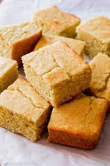

Description
Fill your home with the lovely smell of buttery cornbread. These aromas are sure to bring a smile to everyone's faces as you all enjoy this fluffy and moist treat. Follow along as I show you how have been making this dish for generations. I'll show you my family secrets so that you may share them with your family.
Ingredients
- 1 cup all-purpose flour
- 1 cup yellow cornmeal
- 2/3 cup granulated sugar
- 1 teaspoon salt
- 3 1/2 teaspoons of baking powder
- 1/3 cup neutral oil or melted butter
- 1 large egg
- 1 cup milk
Steps
- Grease a 9 inch round cake pan or cast iron skillet well and set aside. Preheat the oven to 400 degrees
- In a medium mixing bowl, add the flour, cornmeal
- Make a well in the center of your dry ingredients and add your oil or butter, milk, and egg. Stir just until the mixture comes together and there are only a few lumps remaining.
- Pour the batter into the prepared pan and bake for 20-25 minutes until the top is a deep golden brown and a toothpick inserted into the center comes out clean
- Serve hot!